New here? Start with Sprawling coverage or Text with breathing room. The visual guide compares shapes, connections and angles side by side. Click any image to inspect its full resolution.
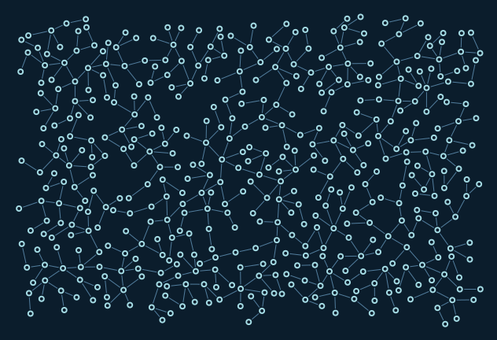
Sprawling coverage
Arctic · 480 nodes
632 × 432
Balanced branching across a rectangular canvas with bounded reseeding.
Options, limits, and command
coverage.tile_size: Size of coverage cells used to find underfilled areas.coverage.reseed_attempts: Budget for starting new components in empty space.failures_per_parent: Accumulated failed attempts before retiring a parent node.
A node target is an upper goal, not a guarantee of complete packing.
python -m graph_ics render --example sprawl --palette arctic --seed 7 --output examples/output/sprawl-arctic.png
Coverage: 149/150 tiles contain nodes. Tile occupancy is not exact area coverage.
Seed 7. 2,261 placement attempts; 0.22s growth. Stop: target reached.
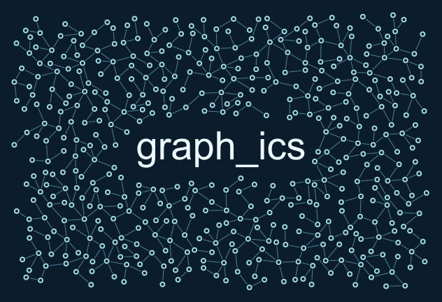
Text with breathing room
Arctic · 480 nodes
632 × 432
Graph growth wraps around a measured text rectangle; padding scales with font size.
Options, limits, and command
Text.size: Font size in world units; measured text excludes growth.Text.padding_em: Additional whitespace as a fraction of the font size.Text.align: Left, centre or right alignment around the text anchor.
The exclusion is a rectangle, not individual glyph outlines.
python -m graph_ics render --example typography --palette arctic --seed 7 --output examples/output/typography-arctic.png
Coverage: 139/150 tiles contain nodes. Tile occupancy is not exact area coverage.
Seed 7. 2,708 placement attempts; 0.26s growth. Stop: target reached.
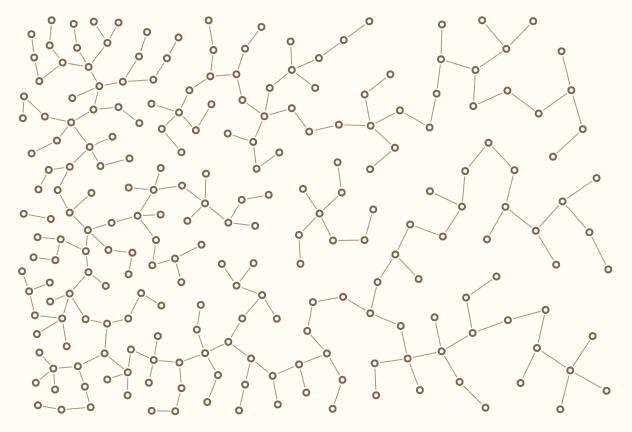
Density gradient
Linen · 229 nodes of 480 requested
632 × 432
Desired population and spacing vary smoothly from dense left to sparse right.
Options, limits, and command
SpatialFields.density: Requested nodes per square world unit, converted to preferred spacing.CoverageSettings: Bias generation toward underfilled cells with finite reseeding.spacing_limits: Minimum and maximum preferred centre spacing from density.
Density is in nodes per square world unit and remains a packing heuristic.
python -m graph_ics render --example density --palette linen --seed 7 --output examples/output/density-linen.png
Coverage: 134/150 tiles contain nodes. Tile occupancy is not exact area coverage.
Seed 7. 4,285 placement attempts; 0.41s growth. Stop: attempt budget exhausted.
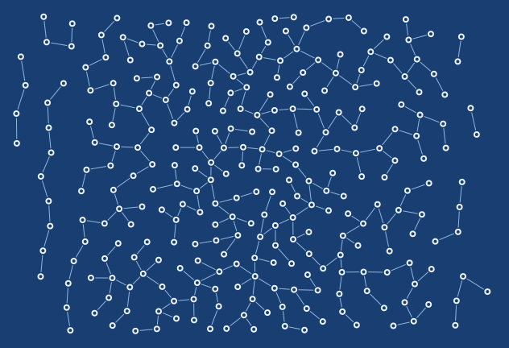
Image density map
Blueprint · 283 nodes of 480 requested
632 × 432
A small scalar image creates a dense central band using world-coordinate bilinear interpolation.
Options, limits, and command
ImageField.pixels: Scalar raster values sampled by bilinear interpolation.ImageField.bounds: World rectangle mapping the first and last pixel centres.ImageField.outside: Clamp, return a constant, or error outside the raster.
Row zero maps to minimum y; a lower-resolution raster smooths small features.
python -m graph_ics render --example raster --palette blueprint --seed 7 --output examples/output/raster-blueprint.png
Coverage: 141/150 tiles contain nodes. Tile occupancy is not exact area coverage.
Seed 7. 4,944 placement attempts; 0.49s growth. Stop: attempt budget exhausted.
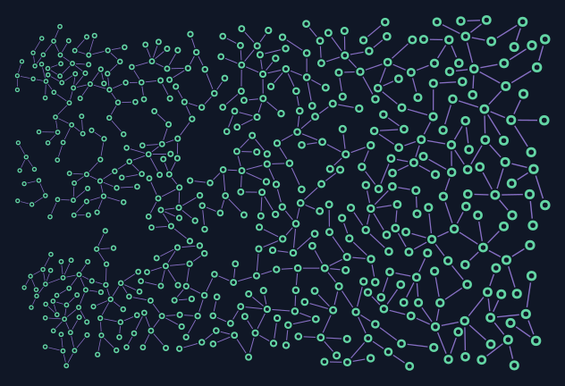
Coordinated sizes
Aurora · 480 nodes
632 × 432
Rings, gaps, buffers, lengths, and stroke widths grow together across the canvas.
Options, limits, and command
SpatialFields.coordinated_scale: Scale radii, lengths, gaps and stroke widths together.scale_limits: Clamp local geometry multipliers to a positive interval.ring_ratio: Inner radius divided by outer radius; controls the hollow centre.
Large geometry can displace small details; field feasibility is not guaranteed.
python -m graph_ics render --example scale --palette aurora --seed 7 --output examples/output/scale-aurora.png
Coverage: 149/150 tiles contain nodes. Tile occupancy is not exact area coverage.
Seed 7. 2,702 placement attempts; 0.34s growth. Stop: target reached.
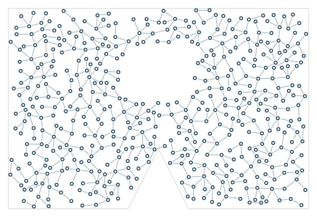
Irregular region and exclusions
Porcelain · 480 nodes
633 × 433
Full nodes and strokes stay inside a concave outline and outside an internal obstacle.
Options, limits, and command
outline_polygon: Allowed shape; full node disks and edge strokes must fit.illegal_areas: Additional polygon obstacles that block visible geometry.draw_border: Draw the supplied outline, independently of growth.
Exact containment does not imply every narrow pocket will be filled.
python -m graph_ics render --example obstacles --palette porcelain --seed 7 --output examples/output/obstacles-porcelain.png
Coverage: 141/142 tiles contain nodes. Tile occupancy is not exact area coverage.
Seed 7. 2,613 placement attempts; 0.23s growth. Stop: target reached.
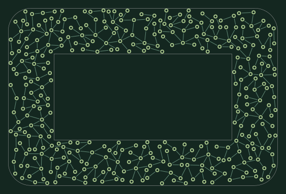
Contour band
Forest · 349 nodes of 480 requested
563 × 383
Grow within a finite-width band around a supplied polygon.
Options, limits, and command
RegionSpec.mode=band: Inside, outside or a finite-width band around a contour.band_width: Full width of the permitted boundary band.padding: Inset or offset that reserves whitespace around the boundary.
This uses supplied polygons. Glyph regions are supported through Text; importing arbitrary SVG paths remains separate.
python -m graph_ics render --example band --palette forest --seed 7 --output examples/output/band-forest.png
Coverage: 98/102 tiles contain nodes. Tile occupancy is not exact area coverage.
Seed 7. 6,124 placement attempts; 0.49s growth. Stop: attempt budget exhausted.
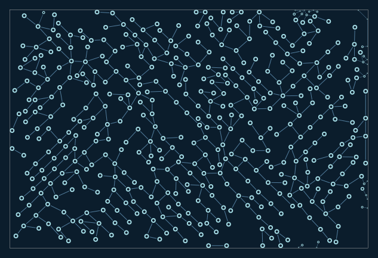
Boundary following (experimental)
Arctic · 480 nodes
633 × 433
Bias growth along a boundary while retaining interior branches.
Options, limits, and command
ContourSettings.mode=follow: Contain, follow tangents, or aim terminal nodes at anchors.boundary_fraction: Fraction of proposals receiving boundary guidance.guidance: Strength of the contour direction bias.
Experimental: gaps can remain and a closed boundary loop is not promised.
python -m graph_ics render --example follow --palette arctic --seed 7 --output examples/output/follow-arctic.png
Coverage: 149/150 tiles contain nodes. Tile occupancy is not exact area coverage.
Seed 7. 2,663 placement attempts; 0.36s growth. Stop: target reached.
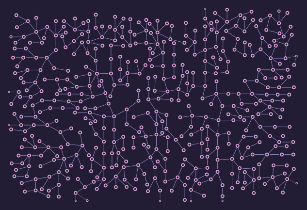
Boundary terminals (experimental)
Orchid · 480 nodes
633 × 433
Bias branch tips toward the region boundary.
Options, limits, and command
ContourSettings.mode=terminate: Contain, follow tangents, or aim terminal nodes at anchors.strict_terminals: Require terminal constraints; unmet conditions are reported.tolerance: Boundary target tolerance in output units.
Experimental: terminal anchoring can remain unmet; inspect the contour report.
python -m graph_ics render --example terminate --palette orchid --seed 7 --output examples/output/terminate-orchid.png
Coverage: 150/150 tiles contain nodes. Tile occupancy is not exact area coverage.
Seed 7. 2,416 placement attempts; 0.42s growth. Stop: target reached.
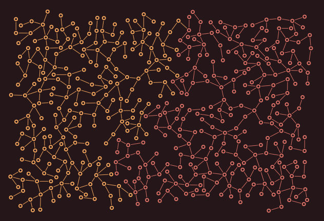
Cooperating colonies
Ember · 480 nodes
632 × 432
Two colored colonies attract and can join through validated component bridges.
Options, limits, and command
Interaction.attraction: Signed steering: negative repels, positive attracts.allow_join: Permit bridges between the specified colonies.target_bridges: Requested number of validated inter-colony connections.
Joining is a permission, not a guaranteed connection; ownership survives a join.
python -m graph_ics render --example cooperate --palette ember --seed 7 --output examples/output/cooperate-ember.png
Coverage: 150/150 tiles contain nodes. Tile occupancy is not exact area coverage.
Seed 7. 2,182 placement attempts; 1.28s growth. Stop: target reached.
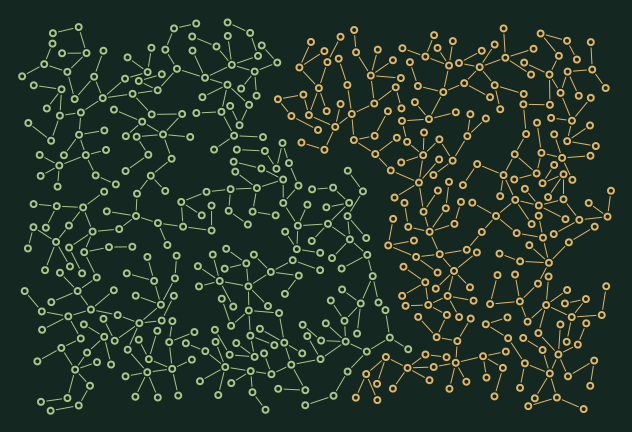
Repulsion and hard separation
Forest · 480 nodes
632 × 432
Colony headings turn away while an explicit rival gap separates rings and full strokes.
Options, limits, and command
Interaction.attraction=-0.3: Signed steering: negative repels, positive attracts.clearance=10: Hard minimum separation between rival visible geometry.Colony.weight: Relative share of growth attempts, not guaranteed territory.
Repulsion alone does not guarantee clearance; weights grant attempts, not area.
python -m graph_ics render --example compete --palette forest --seed 7 --output examples/output/compete-forest.png
Coverage: 150/150 tiles contain nodes. Tile occupancy is not exact area coverage.
Seed 7. 2,278 placement attempts; 0.46s growth. Stop: target reached.
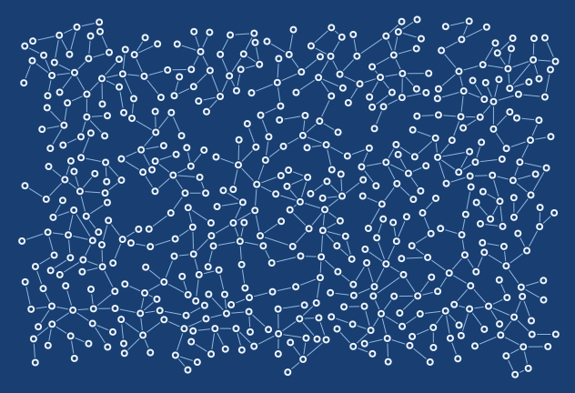
Controlled cycles
Blueprint · 480 nodes
632 × 432
Additional short edges close existing components after branch growth.
Options, limits, and command
target_extra_edges: Requested extra connections after branching to create cycles.max_degree: Maximum incident edges at a node.loop_distance: Search radius for possible extra connections.
Every loop must still pass collision, degree, and both-endpoint angle checks.
python -m graph_ics render --example loops --palette blueprint --seed 7 --output examples/output/loops-blueprint.png
Coverage: 149/150 tiles contain nodes. Tile occupancy is not exact area coverage.
Seed 7. 2,358 placement attempts; 0.22s growth. Stop: target reached.
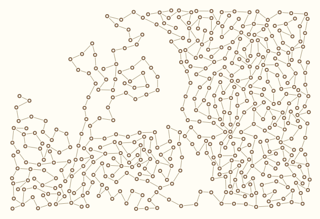
Newest-tip paths
Linen · 480 nodes
632 × 432
Select the most recent active node for winding, less evenly distributed growth.
Options, limits, and command
NewestTip: Grow preferentially from the most recently accepted active node.failures_per_parent: Accumulated failed attempts before retiring a parent node.node_direction_function: Optional callback returning a proposal heading in radians.
An explicit parent policy cannot be combined with coverage scheduling or colonies.
python -m graph_ics render --example newest --palette linen --seed 7 --output examples/output/newest-linen.png
Seed 7. 4,671 placement attempts; 0.33s growth. Stop: target reached.
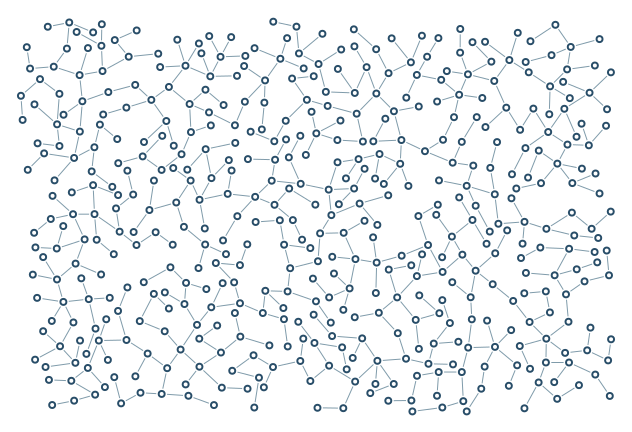
Junction quality and cleanup
Porcelain · 480 nodes
632 × 432
A hard 40-degree limit and preferred 75-degree angle reduce sharp clusters; refill retries freed space.
Options, limits, and command
AngleSettings: Hard minimum angle and probabilistic soft preference at junctions.remove_isolated_nodes: Remove unconnected dots when construction finishes.refill_passes: Bounded retries after cleanup frees space.
Stricter aesthetic constraints can increase rejection and underfill.
python -m graph_ics render --example quality --palette porcelain --seed 7 --output examples/output/quality-porcelain.png
Coverage: 150/150 tiles contain nodes. Tile occupancy is not exact area coverage.
Seed 7. 3,135 placement attempts; 0.28s growth. Stop: target reached.
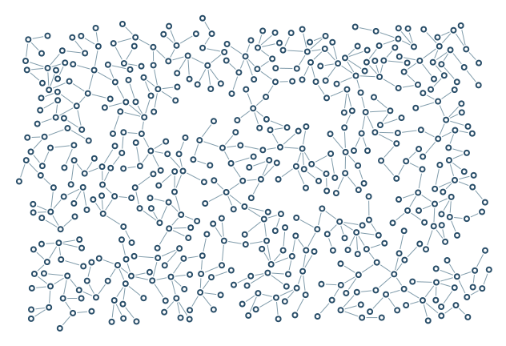
Angles / unrestricted
Porcelain · 480 nodes
632 × 432
No hard or soft angle rule: more acute junctions can survive.
Options, limits, and command
minimum=0: Hard lower bound on the smaller incident angle, in degrees.preferred=0: Soft preferred incident angle, in degrees.penalty=0: Probability-reduction strength below the preferred angle, from 0 to 1.
Collision checks still forbid overlapping strokes.
python -m graph_ics render --example angles_free --palette porcelain --seed 7 --output examples/output/angles_free-porcelain.png
Coverage: 149/150 tiles contain nodes. Tile occupancy is not exact area coverage.
Seed 7. 1,583 placement attempts; 0.16s growth. Stop: target reached.
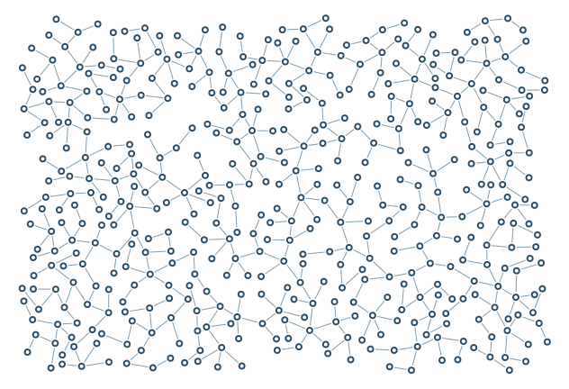
Angles / hard minimum
Porcelain · 480 nodes
632 × 432
Reject every junction below 45 degrees.
Options, limits, and command
minimum=45: Hard lower bound on the smaller incident angle, in degrees.penalty=0: Probability-reduction strength below the preferred angle, from 0 to 1.
This can reduce feasible connections.
python -m graph_ics render --example angles_hard --palette porcelain --seed 7 --output examples/output/angles_hard-porcelain.png
Coverage: 150/150 tiles contain nodes. Tile occupancy is not exact area coverage.
Seed 7. 2,265 placement attempts; 0.20s growth. Stop: target reached.
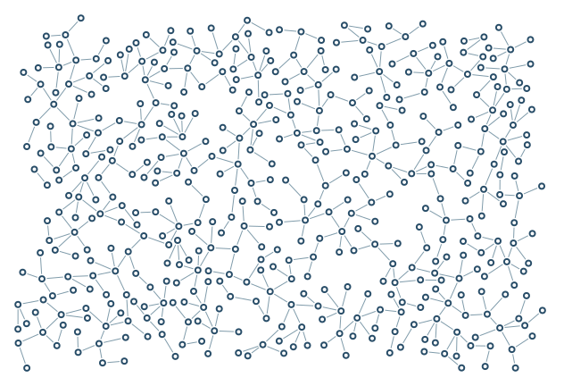
Angles / soft preference
Porcelain · 480 nodes
632 × 432
Prefer 80 degrees with a 0.9 soft penalty, without a hard angle ban.
Options, limits, and command
minimum=0: Hard lower bound on the smaller incident angle, in degrees.preferred=80: Soft preferred incident angle, in degrees.penalty=0.9: Probability-reduction strength below the preferred angle, from 0 to 1.
Soft penalties can still accept sharp angles.
python -m graph_ics render --example angles_soft --palette porcelain --seed 7 --output examples/output/angles_soft-porcelain.png
Coverage: 150/150 tiles contain nodes. Tile occupancy is not exact area coverage.
Seed 7. 1,771 placement attempts; 0.22s growth. Stop: target reached.

Angles / strict junctions
Porcelain · 480 nodes
632 × 432
Combine a 60-degree ban with a 90-degree preference.
Options, limits, and command
minimum=60: Hard lower bound on the smaller incident angle, in degrees.preferred=90: Soft preferred incident angle, in degrees.penalty=0.9: Probability-reduction strength below the preferred angle, from 0 to 1.
Stricter controls may leave more open space.
python -m graph_ics render --example angles_strict --palette porcelain --seed 7 --output examples/output/angles_strict-porcelain.png
Coverage: 150/150 tiles contain nodes. Tile occupancy is not exact area coverage.
Seed 7. 4,832 placement attempts; 0.42s growth. Stop: target reached.

Polygon rings
Porcelain · 480 nodes
632 × 432
Hexagonal hollow nodes retain the same reserved radius as circles.
Options, limits, and command
node_shape=hexagon: Visible hollow outline contained within the reserved outer disk.node_outer_radius: Circumscribed radius used by collision checks and clipping.
Collision and edge clipping use conservative enclosing disks.
python -m graph_ics render --example shapes --palette porcelain --seed 7 --output examples/output/shapes-porcelain.png
Coverage: 149/150 tiles contain nodes. Tile occupancy is not exact area coverage.
Seed 7. 2,261 placement attempts; 0.20s growth. Stop: target reached.
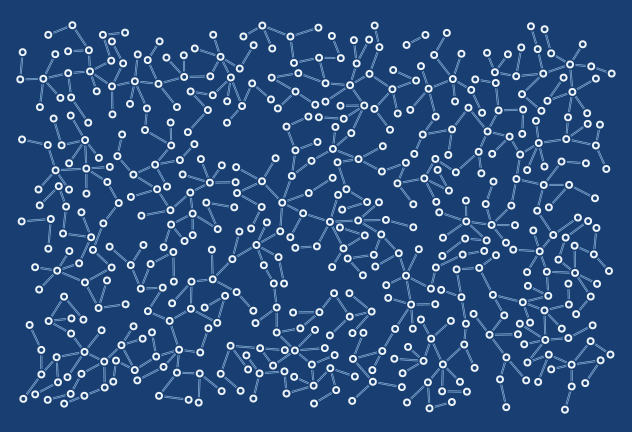
Double connections
Blueprint · 480 nodes
632 × 432
Parallel strokes share a single reserved full-width corridor.
Options, limits, and command
edge_style=double: Solid, dashed, dotted or double strokes in one protected corridor.edge_thickness=2: Full reserved stroke width; double lines use one third per stroke.
Style changes do not open gaps in collision protection.
python -m graph_ics render --example lines --palette blueprint --seed 7 --output examples/output/lines-blueprint.png
Coverage: 150/150 tiles contain nodes. Tile occupancy is not exact area coverage.
Seed 7. 2,189 placement attempts; 0.20s growth. Stop: target reached.
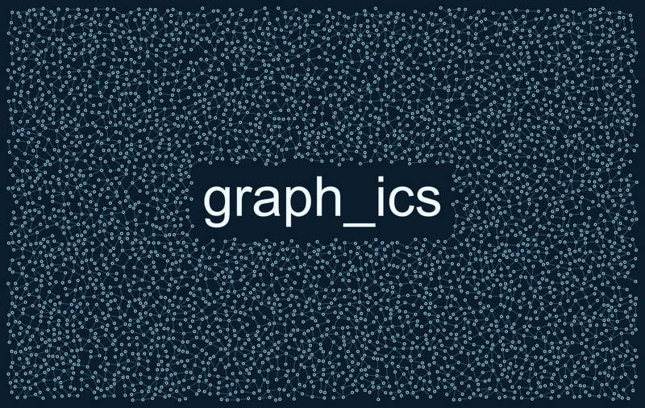
graph_ics
Arctic · 4,000 nodes
1632 × 1032
A broad, dense name composition intended for close inspection at full resolution.
Options, limits, and command
target_nodes=4000: Requested population, including seeds; constraints can prevent it.Text.padding_em: Additional whitespace as a fraction of the font size.coverage: Bounded spatial scheduling and reseeding for more even filling.
Large output takes more generation, validation, and export time.
python -m graph_ics render --example arctic_atlas --palette arctic --seed 7 --output examples/output/arctic_atlas-arctic.png
Coverage: 937/952 tiles contain nodes. Tile occupancy is not exact area coverage.
Seed 7. 34,345 placement attempts; 3.14s growth. Stop: target reached.
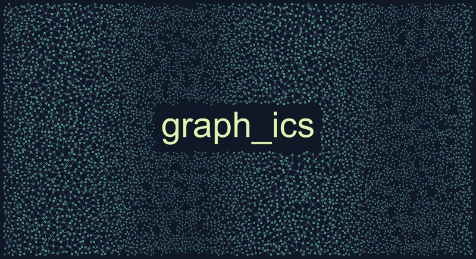
Panoramic network
Aurora · 7,000 nodes
2632 × 1432
A wide network with a coordinated wave in scale and a central title.
Options, limits, and command
target_nodes=7000: Requested population, including seeds; constraints can prevent it.coordinated_scale: Position-dependent scaling of all geometry dimensions.output dimensions: World frame times export scale, including margins.
A high node target may still leave local gaps.
python -m graph_ics render --example panorama --palette aurora --seed 7 --output examples/output/panorama-aurora.png
Coverage: 2134/2170 tiles contain nodes. Tile occupancy is not exact area coverage.
Seed 7. 52,645 placement attempts; 7.29s growth. Stop: target reached.
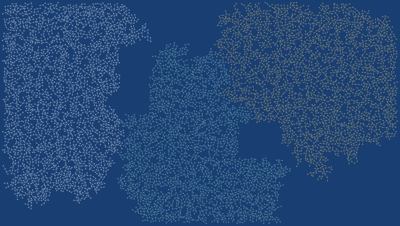
Territorial archipelago
Blueprint · 8,000 nodes
3232 × 1832
Three colonies claim a large canvas around obstacle islands with hard rival gaps.
Options, limits, and command
target_nodes=8000: Requested population, including seeds; constraints can prevent it.three colonies: Three independently owned seed groups share the region.pairwise clearance: Separate hard exclusion distances for each colony pair.
This is spatial competition, not resource consumption or biological survival.
python -m graph_ics render --example archipelago --palette blueprint --seed 7 --output examples/output/archipelago-blueprint.png
Coverage: 2817/3487 tiles contain nodes. Tile occupancy is not exact area coverage.
Seed 7. 21,919 placement attempts; 9.70s growth. Stop: target reached.

UK / spacing only
Porcelain · 5,543 nodes (cap 18,000)
2041 × 3860
The same population raster changes spacing while node dimensions stay fixed.
Options, limits, and command
SpatialFields.density: Requested nodes per square world unit, converted to preferred spacing.
Population is mapped logarithmically; dots are not individual people.
python -m graph_ics render --example uk_density_only --palette porcelain --seed 7 --output examples/output/uk_density_only-porcelain.png
Coverage: 786/872 tiles contain nodes. Tile occupancy is not exact area coverage.
Seed 7. 183,823 placement attempts; 24.56s growth. Stop: attempt budget exhausted.

UK / spacing only
Arctic · 5,543 nodes (cap 18,000)
2041 × 3860
The same population raster changes spacing while node dimensions stay fixed.
Options, limits, and command
SpatialFields.density: Requested nodes per square world unit, converted to preferred spacing.
Population is mapped logarithmically; dots are not individual people.
python -m graph_ics render --example uk_density_only --palette arctic --seed 7 --output examples/output/uk_density_only-arctic.png
Coverage: 786/872 tiles contain nodes. Tile occupancy is not exact area coverage.
Seed 7. 183,823 placement attempts; 25.34s growth. Stop: attempt budget exhausted.

UK / colour only
Porcelain · 10,834 nodes (cap 18,000)
2041 × 3860
Population controls colour; geometry uses uniform dimensions and spacing.
Options, limits, and command
color_map: A spatial scalar mapped through colour stops; geometry remains independent.
Colour encodes log population density, not node count.
python -m graph_ics render --example uk_colors --palette porcelain --seed 7 --output examples/output/uk_colors-porcelain.png
Coverage: 3953/4378 tiles contain nodes. Tile occupancy is not exact area coverage.
Seed 7. 389,226 placement attempts; 73.32s growth. Stop: attempt budget exhausted.

UK / colour only
Arctic · 10,834 nodes (cap 18,000)
2041 × 3860
Population controls colour; geometry uses uniform dimensions and spacing.
Options, limits, and command
color_map: A spatial scalar mapped through colour stops; geometry remains independent.
Colour encodes log population density, not node count.
python -m graph_ics render --example uk_colors --palette arctic --seed 7 --output examples/output/uk_colors-arctic.png
Coverage: 3953/4378 tiles contain nodes. Tile occupancy is not exact area coverage.
Seed 7. 389,226 placement attempts; 73.32s growth. Stop: attempt budget exhausted.

Spain / population density
Porcelain · 17,017 nodes (cap 32,000)
4878 × 3632
Population guides spacing and size in Spain, including the Balearics and excluding the Canary Islands.
Options, limits, and command
SpatialFields.density: Requested nodes per square world unit, converted to preferred spacing.SpatialFields.coordinated_scale: Scale radii, lengths, gaps and stroke widths together.
Small territories may remain empty; this is an artistic map, not a population total.
python -m graph_ics render --example spain_population --palette porcelain --seed 7 --output examples/output/spain_population-porcelain.png
Coverage: 2564/2644 tiles contain nodes. Tile occupancy is not exact area coverage.
Seed 7. 505,728 placement attempts; 93.37s growth. Stop: attempt budget exhausted.

Spain / population density
Arctic · 17,017 nodes (cap 32,000)
4878 × 3632
Population guides spacing and size in Spain, including the Balearics and excluding the Canary Islands.
Options, limits, and command
SpatialFields.density: Requested nodes per square world unit, converted to preferred spacing.SpatialFields.coordinated_scale: Scale radii, lengths, gaps and stroke widths together.
Small territories may remain empty; this is an artistic map, not a population total.
python -m graph_ics render --example spain_population --palette arctic --seed 7 --output examples/output/spain_population-arctic.png
Coverage: 2564/2644 tiles contain nodes. Tile occupancy is not exact area coverage.
Seed 7. 505,728 placement attempts; 93.05s growth. Stop: attempt budget exhausted.

United Kingdom / population density
Porcelain · 5,989 nodes (cap 18,000)
2041 × 3860
WorldPop 2020 population density guides spacing and scale inside a Natural Earth UK boundary.
Options, limits, and command
log density mapping: Compress population density logarithmically for readable spacing.variable scale: Shrink geometry in dense areas to retain city detail.12000 target nodes: Request a large map; the actual count is reported after packing.
Artistic logarithmic mapping, not one dot per person. Small islands and narrow coasts can remain empty.
python -m graph_ics render --example uk_population --palette porcelain --seed 7 --output examples/output/uk_population-porcelain.png
Coverage: 787/872 tiles contain nodes. Tile occupancy is not exact area coverage.
Seed 7. 195,888 placement attempts; 36.11s growth. Stop: attempt budget exhausted.

United Kingdom / population density
Arctic · 5,989 nodes (cap 18,000)
2041 × 3860
WorldPop 2020 population density guides spacing and scale inside a Natural Earth UK boundary.
Options, limits, and command
log density mapping: Compress population density logarithmically for readable spacing.variable scale: Shrink geometry in dense areas to retain city detail.12000 target nodes: Request a large map; the actual count is reported after packing.
Artistic logarithmic mapping, not one dot per person. Small islands and narrow coasts can remain empty.
python -m graph_ics render --example uk_population --palette arctic --seed 7 --output examples/output/uk_population-arctic.png
Coverage: 787/872 tiles contain nodes. Tile occupancy is not exact area coverage.
Seed 7. 195,888 placement attempts; 44.82s growth. Stop: attempt budget exhausted.
No examples match. Try a different filter or reset the selection.